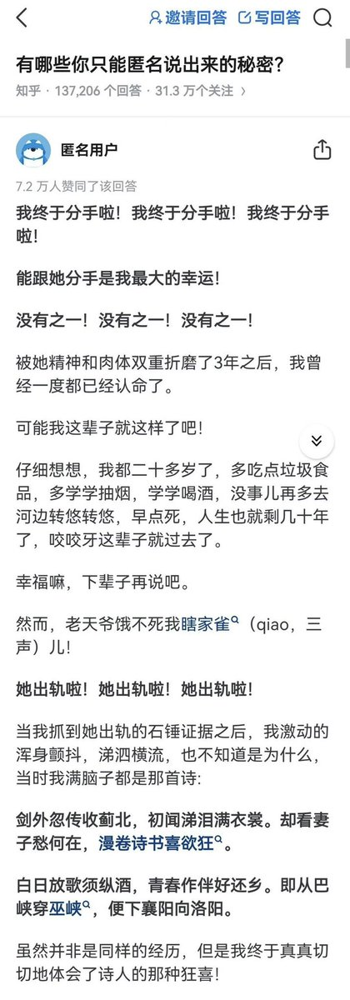
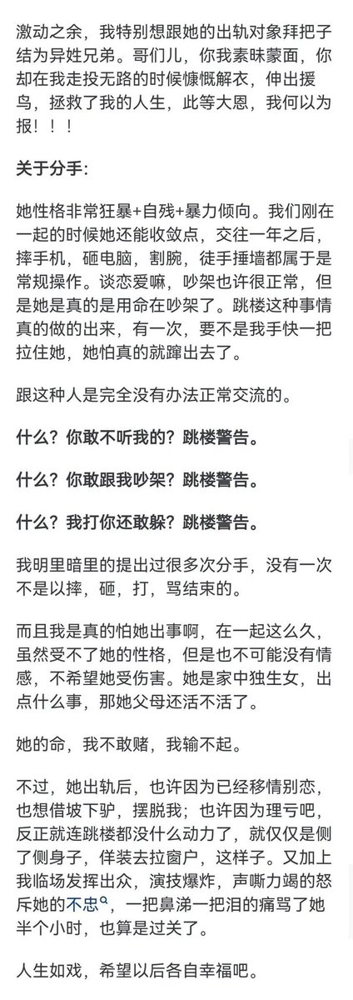
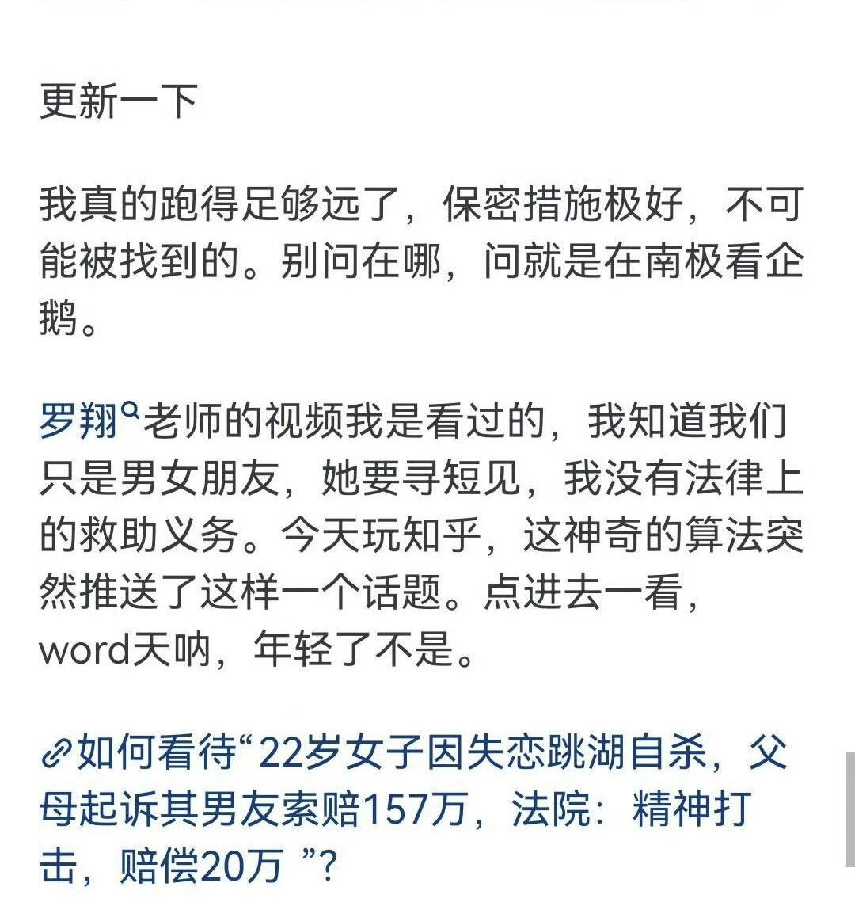

🍀🍥竹蜻蜓🍥🍀
@zqtlovekris99
一般我碰见这种会让他留下一个文字证据或者视频证据让他承认他的4⃣️并非我鼓励教唆的，其余的你爱咋咋地。一般碰见这种情况对面就怂了。当然也有真嘎了的，但我也没被追过责。所以就是只要我没道德就不会被道德绑架



Iggie🚁
@Kenntnis22
一名男网友匿名庆祝女友出轨、自己顺利分手，说能分手是最大的幸运，还对女方出轨对象表示感激涕零，说大恩大德无以为报。
这位男网友称被女方跳楼警告折磨得死去活来…… https://t.co/GCJYTPzzSQ